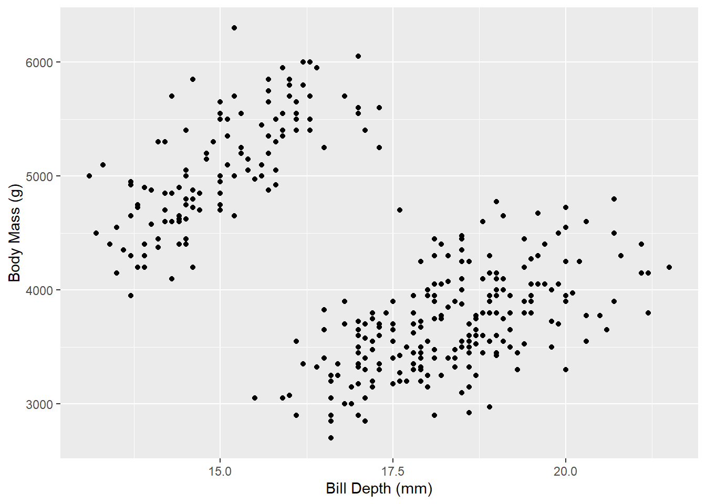
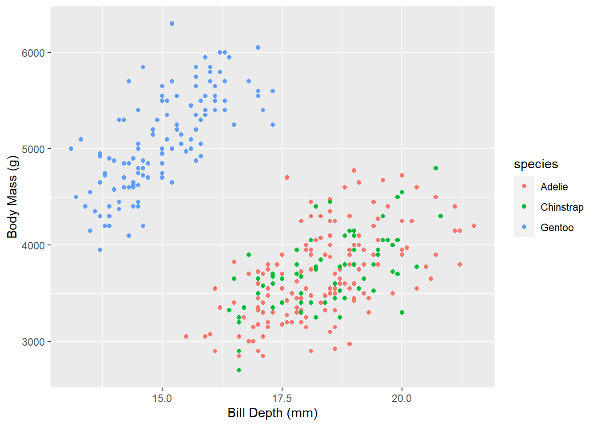
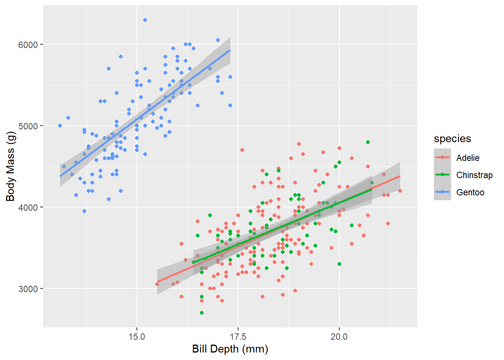
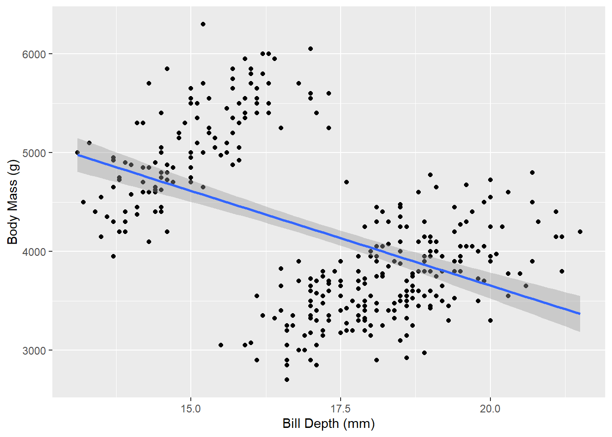
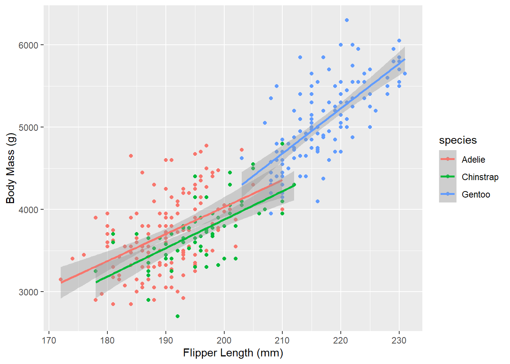
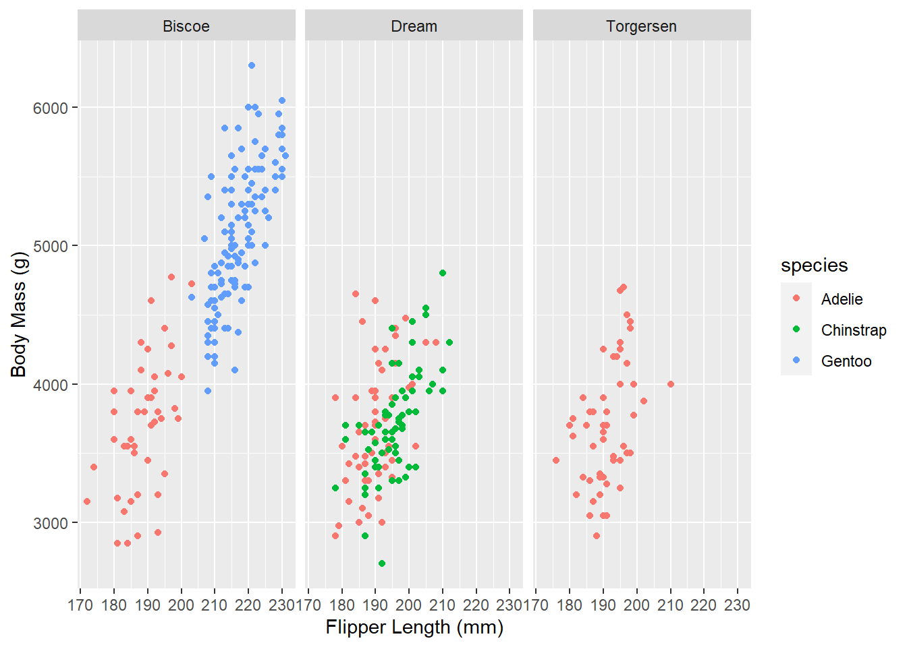

library(tidyverse)
library(broom)
library(modelsummary)
library(kableExtra)
# Load penguins data
penguins <- read_csv("data/penguins.csv")Problem Set 2: Regression
Task 1: Penguins
Between 2007 and 2009, researchers collected data on penguins in three islands in the Palmer Archipelago in Antarctica: Biscoe, Dream, and Torgersen. The penguins dataset has data for 342 penguins from 3 different species: Chinstrap, Gentoo, and Adélie. It includes the following variables:
species: The penguin’s species (Chinstrap, Gentoo, and Adélie)island: The island where the penguin lives (Biscoe, Dream, and Torgersen)bill_length_mm: The length of the penguin’s bill, in millimeters (distance from the penguin’s face to the tip of the bill)bill_depth_mm: The depth of the penguin’s bill, in millimeters (height of the bill; distance from the bottom of the bill to the top of the bill)flipper_length_mm: The length of the penguin’s flippers, in millimetersbody_mass_g: The weight of the penguin, in gramssex: The sex of the penguinyear: The year the observation was made
Exploratory analysis
What is the relationship between penguin weight and bill depth? This plot shows some initial trends:
ggplot(data = penguins,
aes(x = bill_depth_mm, y = body_mass_g)) +
geom_point() +
labs(x = "Bill Depth (mm)",
y = "Body Mass (g)")
This plot shows that, generally, as bill depth grows, body mass increases assuming whatever is causing the two separate clusters to appear, which is unclear from this plot, is controlled for. These clusters indicate that there may be other factors influencing the body mass of penguins.
Make a new plot that colors these points by species. What can you tell about the relationship between bill depth and penguin weight?
ggplot(data = penguins,
aes(x = bill_depth_mm, y = body_mass_g)) +
geom_point(mapping = aes(color = species)) +
labs(x = "Bill Depth (mm)",
y = "Body Mass (g)")
This plot clearly shows that Gentoo penguins have smaller bill depth than Adelie and Chinstrap penguins, but within there own species, bill depth still has a positive correlation to body mass. Though the Adelie and Chinstrap penguins are generally smaller in body mass and bill depth than Gentoo penguins, within their species, there is still a postive correlation between bill depth and body mass.
Add a geom_smooth() layer to the plot and make sure it uses a straight line (hint: include method="lm" in the function). What does this tell you about the relationship between bill depth and body mass?
ggplot(data = penguins,
aes(x = bill_depth_mm, y = body_mass_g, color = species)) +
geom_point() +
geom_smooth(method = "lm") +
labs(x = "Bill Depth (mm)",
y = "Body Mass (g)")`geom_smooth()` using formula = 'y ~ x'
As stated earlier, this plot shows even more clearly the upward slope of the trendline, indicating a positive relationship between bill depth and body mass.
Change the plot so that there’s a single line for all the points instead of one line per species. How does the slope of this single line differ from the slopes of the species specific lines? Why??
ggplot(data = penguins,
aes(x = bill_depth_mm, y = body_mass_g)) +
geom_point() +
geom_smooth(method = "lm") +
labs(x = "Bill Depth (mm)",
y = "Body Mass (g)")`geom_smooth()` using formula = 'y ~ x'
When species is not controlled for, the there is an overall downward slope, indicating a negative relationship between bill depth and body mass. This is because there are more penguins in the sample from either Adelie or Chinstrap species than from the Gentoo species. Since the bill depth is higher for the first two species, but those species also generally have a smaller body mass, it weights the distribution in a misleading way.
What is the relationship between flipper length and body mass? Make another plot with flipper_length_mm on the x-axis, body_mass_g on the y-axis, and points colored by species.
ggplot(data = penguins,
aes(x = flipper_length_mm, y = body_mass_g, color = species)) +
geom_point() +
geom_smooth(method = "lm") +
labs(x = "Flipper Length (mm)",
y = "Body Mass (g)")`geom_smooth()` using formula = 'y ~ x'
This plot shows that there is a positive relationship between flipper length and body mass.
Facet the plot by island (island)
ggplot(data = penguins,
aes(x = flipper_length_mm, y = body_mass_g, color = species)) +
geom_point() +
facet_wrap(vars(island)) +
labs(x = "Flipper Length (mm)",
y = "Body Mass (g)")
Tell a story about the relationship between flipper length and weight in these three penguin species.
As flipper length increases, body mass also increases. Though the Gentoo penguins seem to be larger in general, both in flipper length and body mass, the trend is consistent among all species that with longer flippers there is a higher body mass.
Tell a story about the distribution of penguins across the three islands.
Adelie penguins are found on all three islands, but Gentoo penguins and Chinstrap penguins are only found on Biscoe and Dream, respectively. Biscoe island contains both Adelie and Gentoo penguins. Dream island contains both Adelie and Chinstrap penguins. Torgersen island contains only Adelie penguins. If the species were not coded by color in these plots, one might conclude that penguins are larger on the island of Biscoe because the overall average body mass of penguins on that island is larger. The colors help convey that the difference in size is probably better explained by the species of penguin than the location.
Models
Predicting weight with bill depth
Does bill depth predict penguin weight?
model_depth_weight <- lm(body_mass_g ~ bill_depth_mm,
data = penguins)
tidy(model_depth_weight, conf.int = TRUE)# A tibble: 2 × 7
term estimate std.error statistic p.value conf.low conf.high
<chr> <dbl> <dbl> <dbl> <dbl> <dbl> <dbl>
1 (Intercept) 7489. 335. 22.3 1.13e-68 6829. 8148.
2 bill_depth_mm -192. 19.4 -9.87 2.28e-20 -230. -153.glance(model_depth_weight)# A tibble: 1 × 12
r.squared adj.r.squa…¹ sigma stati…² p.value df logLik AIC BIC devia…³
<dbl> <dbl> <dbl> <dbl> <dbl> <dbl> <dbl> <dbl> <dbl> <dbl>
1 0.223 0.220 708. 97.4 2.28e-20 1 -2729. 5463. 5475. 1.70e8
# … with 2 more variables: df.residual <int>, nobs <int>, and abbreviated
# variable names ¹adj.r.squared, ²statistic, ³devianceWhat happens as bills get taller? Is the association statistically significant? How confident are you about these results? (Hint: look at the \(R^2\))
The intercept is 7488.65, which means that the average penguin will have a body mass of 7488.65 grams when the bill depth is 0 mm. This does not mean much since no penguin has a bill depth of 0 mm. The slope of bill_depth_mm is -191.64, which means that a 1 mm increase in bill depth is associated with a 191.64 gram decrease in body mass, on average, without controlling for any other factors. The association is statistically significant because the p value is virtually zero. The \(R^2\) here is 0.223, which means that bill depth explains only 22.3% of the variation in penguin body mass.
Predicting weight with bill depth and flipper length
RUN A MODEL that predicts weight with bill depth and flipper length (i.e. body_mass_g ~ bill_depth_mm + flipper_length_mm)
model_weight_depth_flipper <- lm(body_mass_g ~
bill_depth_mm +
flipper_length_mm,
data = penguins)
tidy(model_weight_depth_flipper, conf.int = TRUE)# A tibble: 3 × 7
term estimate std.error statistic p.value conf.low conf.high
<chr> <dbl> <dbl> <dbl> <dbl> <dbl> <dbl>
1 (Intercept) -6542. 541. -12.1 2.99e-28 -7606. -5478.
2 bill_depth_mm 22.6 13.3 1.70 8.92e- 2 -3.49 48.8
3 flipper_length_mm 51.5 1.87 27.6 7.72e-89 47.9 55.2glance(model_weight_depth_flipper)# A tibble: 1 × 12
r.squared adj.r.squ…¹ sigma stati…² p.value df logLik AIC BIC devia…³
<dbl> <dbl> <dbl> <dbl> <dbl> <dbl> <dbl> <dbl> <dbl> <dbl>
1 0.761 0.760 393. 540. 4.23e-106 2 -2527. 5062. 5077. 5.24e7
# … with 2 more variables: df.residual <int>, nobs <int>, and abbreviated
# variable names ¹adj.r.squared, ²statistic, ³devianceDid the size of the bill depth coefficient change after controlling for flipper length?
The intercept is -6541.91, which means that the average penguin will have a body mass of -6541.91 grams when the bill depth and the flipper length is 0 mm. This does not mean much since a penguin cannot have a negative weight, and no penguin has a bill depth or flipper length of 0 mm. The slope of bill_depth_mm is now 22.63, which means that a 1 mm increase in bill depth is associated with a 22.63 gram increase in body mass, on average, when flipper length is held constant. The slope of flipper_length_mm is 51.54, which means that a 1 mm increase in flipper length is associated with a 51.54 gram increase in body mass, on average, when bill depth is held constant. The coefficient for bill_depth_mm completely changed directions, now indicating a positive association between the two variables. The association is still statistically significant because the p value is still virtually zero, even though the correlation is now in a different direction. The adjusted \(R^2\) here is 0.76, which means that bill depth and flipper length explain 76% of the variation in penguin body mass.
Predicting weight with bill depth, flipper length, and species
RUN A MODEL that predicts weight with bill depth, flipper length, and species.
model_weight_depth_flipper_species <- lm(body_mass_g ~
bill_depth_mm +
flipper_length_mm +
species,
data = penguins)
tidy(model_weight_depth_flipper_species, conf.int = TRUE)# A tibble: 5 × 7
term estimate std.error statistic p.value conf.low conf.high
<chr> <dbl> <dbl> <dbl> <dbl> <dbl> <dbl>
1 (Intercept) -4527. 517. -8.76 9.87e-17 -5544. -3510.
2 bill_depth_mm 182. 18.4 9.93 1.45e-20 146. 218.
3 flipper_length_mm 25.7 3.10 8.30 2.63e-15 19.6 31.8
4 speciesChinstrap -132. 51.4 -2.57 1.07e- 2 -233. -30.9
5 speciesGentoo 1289. 133. 9.71 8.28e-20 1028. 1550. glance(model_weight_depth_flipper_species)# A tibble: 1 × 12
r.squared adj.r.squ…¹ sigma stati…² p.value df logLik AIC BIC devia…³
<dbl> <dbl> <dbl> <dbl> <dbl> <dbl> <dbl> <dbl> <dbl> <dbl>
1 0.832 0.830 331. 417. 4.66e-129 4 -2467. 4946. 4969. 3.69e7
# … with 2 more variables: df.residual <int>, nobs <int>, and abbreviated
# variable names ¹adj.r.squared, ²statistic, ³devianceWhat do the species coefficients mean? Did the bill depth coefficient change after controlling for both flipper length and species?
The intercept is -4526.89, which means that the average penguin will have a body mass of -4526.89 grams when the bill depth and the flipper length is 0 mm and the species is Adelie (the reference group). This does not mean much since a penguin cannot have a negative weight, and no penguin has a bill depth or flipper length of 0 mm. The slope of bill_depth_mm is now 182.36, which means that a 1 mm increase in bill depth is associated with a 182.36 gram increase in body mass, on average, when flipper length and species are held constant. The slope of flipper_length_mm is now 25.7, which means that a 1 mm increase in flipper length is associated with a 25.7 gram increase in body mass, on average, when bill depth and species are held constant. The coefficient for bill_depth_mm became even higher, indicating an even stronger positive association between the two variables, hold the other constant. The coefficient for Chinstrap is -131.97, which means that controlling for bill depth and flipper length, Chinstrap penguins are 131.97 grams lighter than Adelie penguins. The coefficient for Gentoo is 1288.97, which means that controlling for bill depth and flipper length, Gentoo penguins are 1288.97 grams heavier than Adelie penguins. The association for all variables is statistically significant because the p values are all virtually zero. The adjusted \(R^2\) here is 0.83, which means that bill depth, flipper length, and species explain 83% of the variation in penguin body mass.
All models at the same time
# Right now there's only one model here. Add the others from above (whatever you
# called them) like so:
# modelsummary(list(model_depth_weight, some_other_model, yet_another_model, etc))
notes <- c("t statistics in parentheses\n",
"+ p < 0.1, * p < 0.05, ** p < 0.01, *** p < 0.001")
modelsummary(list("Model 1"=model_depth_weight,
"Model 2"=model_weight_depth_flipper,
"Model 3"=model_weight_depth_flipper_species),
coef_rename = c(bill_depth_mm = "Bill Depth (mm)",
flipper_length_mm = "Flipper Length (mm)",
speciesChinstrap = "Chinstrap",
speciesGentoo = "Gentoo"),
output = "kableExtra",
estimate = "{estimate} {stars}",
statistic = "statistic",
title = "Penguin Models",
fmt = 2) %>%
row_spec(c(1,3,5,7,9), background = "#92c0fc") %>%
footnote(general = notes, footnote_as_chunk = TRUE)| Model 1 | Model 2 | Model 3 | |
|---|---|---|---|
| (Intercept) | 7488.65 *** | −6541.91 *** | −4526.89 *** |
| (22.34) | (−12.10) | (−8.76) | |
| Bill Depth (mm) | −191.64 *** | 22.63 + | 182.36 *** |
| (−9.87) | (1.70) | (9.93) | |
| Flipper Length (mm) | 51.54 *** | 25.70 *** | |
| (27.64) | (8.30) | ||
| Chinstrap | −131.97 * | ||
| (−2.57) | |||
| Gentoo | 1288.97 *** | ||
| (9.71) | |||
| Num.Obs. | 342 | 342 | 342 |
| R2 | 0.223 | 0.761 | 0.832 |
| R2 Adj. | 0.220 | 0.760 | 0.830 |
| AIC | 5463.3 | 5061.9 | 4945.7 |
| BIC | 5474.8 | 5077.3 | 4968.7 |
| Log.Lik. | −2728.667 | −2526.968 | −2466.846 |
| RMSE | 706.00 | 391.45 | 328.34 |
|
Note: t statistics in parentheses + p < 0.1, * p < 0.05, ** p < 0.01, *** p < 0.001 |
Task 2: Food access and mortality
# Make sure you look at this dataset by clicking on its name in the Environment
# panel in RStudio. Sort some of the different columns and look around to get a
# feel for what's in the data
food_health <- read_csv("data/food_health_politics.csv") Rows: 3143 Columns: 26
── Column specification ────────────────────────────────────────────────────────
Delimiter: ","
chr (2): state, county
dbl (24): FIPS, low_access_pop, low_access_change, pct_low_access_pop, child...
ℹ Use `spec()` to retrieve the full column specification for this data.
ℹ Specify the column types or set `show_col_types = FALSE` to quiet this message.We’re interested in looking at the relationships between food access, mortality, and politics. Do do this, we look at data from three different sources:
- The USDA’s Food Environment Atlas
- The CDC’s “Compressed Mortality File 1999-2015 Series 20 No. 2U, 2016”
- 2016 election results (found all over the internet)
Each row in the dataset is a US county. The main outcome we care about is mortality_rate, or the number of deaths per 100,000 people in a county between 2013-2015. Other interesting variables in the dataset include:
pct_low_access_pop: Percent of the county’s population with low access to foodpct_children_low_access: Percent of the county’s children with low access to foodgrocery_stores_per_1000: Number of grocery stores in a county (per 1,000 residents)snap_stores_per_1000: Number of stores that accept SNAP (food stamps) in a county (per 1,000 residents)fastfood_per_1000: Number of fast food stores in a county (per 1,000 residents)per_dem_2012: Percent of the county that voted for Obama in 2012per_dem_2016: Percent of the county that voted for Clinton in 2016
Exploratory analysis
Models
Does access to food predict mortality?
According to this model, there is a negative relationship between food access and mortality. When low access to food increases, the mortality rate decreases.
model_mortality_food <- lm(mortality_rate ~ pct_low_access_pop,
data = food_health)
tidy(model_mortality_food, conf.int = TRUE)# A tibble: 2 × 7
term estimate std.error statistic p.value conf.low conf.high
<chr> <dbl> <dbl> <dbl> <dbl> <dbl> <dbl>
1 (Intercept) 845. 4.06 208. 0 837. 853.
2 pct_low_access_pop -125. 13.5 -9.23 4.94e-20 -151. -98.1glance(model_mortality_food)# A tibble: 1 × 12
r.squared adj.r.s…¹ sigma stati…² p.value df logLik AIC BIC devia…³
<dbl> <dbl> <dbl> <dbl> <dbl> <dbl> <dbl> <dbl> <dbl> <dbl>
1 0.0266 0.0263 146. 85.2 4.94e-20 1 -19948. 39901. 39920. 6.63e7
# … with 2 more variables: df.residual <int>, nobs <int>, and abbreviated
# variable names ¹adj.r.squared, ²statistic, ³devianceWhat happens as the percent of low access to food goes up by 1%? Is that significant? Again, this is backwards from what you’d expect—as the percent of low access goes up, mortality drops. Why might that be? How much do you trust this finding? (Hint: look at the \(R^2\) value)
As the percent of residents with low food access increases by one point, the mortality rate decreases by 845.31 (per 100,000 residents). This relationship is statistically significant because the p value is virtually zero. There could be other factors that are not displayed in this data that could be impacting mortality rates. For example, rural counties may have less access to food because the population is lower and residents are more likely to live further away from grocery stores. It is unclear what the metric for “low access to food” is here. According to the \(R^2\) value, low food access only accounts for 26.6% of the variation in mortality rate.
Do more SNAP stores per person predict mortality?
model_mortality_snap <- lm(mortality_rate ~ snap_stores_per_1000,
data = food_health)
tidy(model_mortality_snap, conf.int = TRUE)# A tibble: 2 × 7
term estimate std.error statistic p.value conf.low conf.high
<chr> <dbl> <dbl> <dbl> <dbl> <dbl> <dbl>
1 (Intercept) 654. 6.35 103. 0 642. 667.
2 snap_stores_per_1000 174. 6.30 27.7 3.22e-151 162. 187.glance(model_mortality_snap)# A tibble: 1 × 12
r.squared adj.r.…¹ sigma stati…² p.value df logLik AIC BIC devia…³
<dbl> <dbl> <dbl> <dbl> <dbl> <dbl> <dbl> <dbl> <dbl> <dbl>
1 0.198 0.198 131. 768. 3.22e-151 1 -19595. 39196. 39214. 5.37e7
# … with 2 more variables: df.residual <int>, nobs <int>, and abbreviated
# variable names ¹adj.r.squared, ²statistic, ³devianceWhat happens as the proportion of SNAP stores goes up? Do you trust this number more or less than low access to food?
As the number of SNAP stores per 1000 residents increases by one, the mortality rate increases by 174.49 (per 100,000 residents). This relationship is statistically significant because the p value is virtually zero. According to the \(R^2\) value, low food access only accounts for 19.8% of the variation in mortality rate, which is even less than what low food access accounted for. Again, there are likely other factors such as neighborhood characteristics and income that might better explain this surprising result. For example, stores that accept SNAP are more likely to be located in low income neighborhoods; people in low income neighborhoods are more likely to be low income, and less income decreases access to medical care, which, of course, can increase mortality.
Do election results and access to food and SNAP stores predict mortality?
RUN A MODEL THAT PREDICTS MORTALITY WITH A BUNCH OF COVARIATES (i.e. mortality_rate ~ pct_low_access_pop + snap_stores_per_1000 + per_dem_2016 + anything else you want to throw in)
model_mortality_many <- lm(mortality_rate ~ pct_low_access_pop +
snap_stores_per_1000 +
fastfood_per_1000 +
per_dem_2016,
data = food_health)
tidy(model_mortality_many, conf.int = TRUE)# A tibble: 5 × 7
term estimate std.error statistic p.value conf.low conf.high
<chr> <dbl> <dbl> <dbl> <dbl> <dbl> <dbl>
1 (Intercept) 744. 8.92 83.4 0 726. 761.
2 pct_low_access_pop -170. 12.3 -13.9 1.41e- 42 -194. -146.
3 snap_stores_per_1000 181. 6.06 29.9 5.60e-173 169. 193.
4 fastfood_per_1000 -17.6 7.68 -2.29 2.19e- 2 -32.7 -2.55
5 per_dem_2016 -149. 15.2 -9.82 1.92e- 22 -179. -119. glance(model_mortality_many)# A tibble: 1 × 12
r.squared adj.r.…¹ sigma stati…² p.value df logLik AIC BIC devia…³
<dbl> <dbl> <dbl> <dbl> <dbl> <dbl> <dbl> <dbl> <dbl> <dbl>
1 0.266 0.265 125. 279. 3.38e-205 4 -19331. 38674. 38710. 4.86e7
# … with 2 more variables: df.residual <int>, nobs <int>, and abbreviated
# variable names ¹adj.r.squared, ²statistic, ³devianceInterpret the different coefficients. How predictive is this model (i.e. what’s the R2)? Do you believe this model?
When controlling for low access to food, the number of SNAP stores per 1000 residents, and the prevalence of fast food restaurants, as the percent of the county who voted Democrat in 2016 increases by one point, the mortality rate decreases by 149.2 (per 100,000 residents). As the percent of residents with low access to food increases, the mortality rate decreases when holding all other variables constant. The prevalence of SNAP stores has a positive relationship with the mortality rate, but the prevalence of fast food restaurants’ relationship is negative when the other variables are held constant. These relationships are statistically significant because the p values are all virtually zero. In summary, low access to food and more fast food decrease the mortality rate, and the presence of SNAP stores increases the mortality rate. According to the adjusted \(R^2\) value, these factors only account for 26.5% of the variation in mortality rate. What accounts for the other 73.5% of the mortality rate? This model does not include enough other influential variables that are necessary to access the factors that lead to a high mortality rate.
Mortality, contolling for state differences
RUN A MODEL with some number of plausible independent/explanatory variables. Include state as one of them
# Add other explanatory variables here
model_with_state <- lm(mortality_rate ~ pct_low_access_pop + state,
data = food_health)
# This table is 50+ rows long! While it might be interesting to see changes in
# intercept in relation to Alaska (the omitted state here), like how Alabama's
# mortality rate is 137 higher than Alaska's while DC's is 84 lower, it's not
# super helpful. Controlling for state does capture some of the state-specific
# reasons for varying mortality though, so it's good to include. We just don't
# really need to see all those coefficients. To remove them from this table of
# results, filter them out. The "!" in R means "not", so here we're only looking
# at rows that don't start with "state"
tidy(model_with_state, conf.int = TRUE) %>%
filter(!str_starts(term, "state"))# A tibble: 2 × 7
term estimate std.error statistic p.value conf.low conf.high
<chr> <dbl> <dbl> <dbl> <dbl> <dbl> <dbl>
1 (Intercept) 835. 23.3 35.9 8.30e-236 790. 881.
2 pct_low_access_pop -54.7 12.1 -4.50 6.95e- 6 -78.5 -30.9model_mortality_many_state <- lm(mortality_rate ~ pct_low_access_pop +
snap_stores_per_1000 +
fastfood_per_1000 +
per_dem_2016 +
state,
data = food_health)
tidy(model_mortality_many_state, conf.int = TRUE) %>%
filter(!str_starts(term, "state"))# A tibble: 5 × 7
term estimate std.error statistic p.value conf.low conf.high
<chr> <dbl> <dbl> <dbl> <dbl> <dbl> <dbl>
1 (Intercept) 652. 24.0 27.2 8.32e-146 605. 699.
2 pct_low_access_pop -97.2 11.6 -8.39 7.08e- 17 -120. -74.5
3 snap_stores_per_1000 135. 5.68 23.7 5.34e-114 123. 146.
4 fastfood_per_1000 -17.0 6.72 -2.52 1.17e- 2 -30.1 -3.78
5 per_dem_2016 -63.9 15.5 -4.13 3.65e- 5 -94.2 -33.6 When controlling for low access to food, the number of SNAP stores per 1000 residents, the prevalence of fast food restaurants, and state, as the percent of the county who voted Democrat in 2016 increases by one point, the mortality rate decreases by 63.88 (per 100,000 residents), which is less of a decrease than without controlling for state. As the percent of residents with low access to food increases, the mortality rate still decreases when holding all other variables constant, but by much less. The prevalence of SNAP stores still has a positive relationship with the mortality rate, and the prevalence of fast food restaurants’ relationship is still negative when the other variables are held constant, but there is less of a difference. These relationships are still statistically significant because the p values are all virtually zero. In summary, low access to food and more fast food decrease the mortality rate, and the presence of SNAP stores increases the mortality rate, but less so when you control for state.
All models at the same time
# Right now there are only two models here. Add the others from above (whatever
# you called them) like so:
# modelsummary(list(model_mortality_food, some_other_model, yet_another_model, etc))
# Also, by default, modelsummary will include all the state coefficients, which
# we don't want. We can omit specific coefficients with the `coef_omit`
# argument. The ^ character means it'll omit coefficients that *start with*
# "state". Without ^, it would omit any coefficient where the characters "state"
# appeared anywhere in the name, which might be too greedy
notes <- c("t statistics in parentheses\n",
"+ p < 0.1, * p < 0.05, ** p < 0.01, *** p < 0.001")
modelsummary(list("Model 1"=model_snap,
"Model 2"=model_vote,
"Model 3"=model_mortality_food,
"Model 4"=model_mortality_snap,
"Model 5"=model_mortality_many,
"Model 6"=model_with_state,
"Model 7"=model_mortality_many_state),
coef_omit = "^state",
coef_rename = c(pct_low_access_pop = "Percent of the county's population with low access to food",
snap_stores_per_1000 = "Number of stores that accept SNAP in a county (per 1,000 residents)",
fastfood_per_1000 = "Number of fast food stores in a county (per 1,000 residents",
per_dem_2016 = "Percent of the county that voted for Clinton in 2016"),
output = "kableExtra",
estimate = "{estimate} {stars}",
statistic = "statistic",
title = "Mortality Rates and Access to Food",
fmt = 2) %>%
row_spec(c(1,3,5,7,9), background = "#f7fabe") %>%
footnote(general = notes, footnote_as_chunk = TRUE)| Model 1 | Model 2 | Model 3 | Model 4 | Model 5 | Model 6 | Model 7 | |
|---|---|---|---|---|---|---|---|
| (Intercept) | 654.37 *** | 861.34 *** | 845.31 *** | 654.37 *** | 743.85 *** | 835.29 *** | 651.97 *** |
| (103.05) | (142.43) | (208.42) | (103.05) | (83.41) | (35.89) | (27.18) | |
| Number of stores that accept SNAP in a county (per 1,000 residents) | 174.49 *** | 174.49 *** | 181.28 *** | 134.63 *** | |||
| (27.71) | (27.71) | (29.92) | (23.69) | ||||
| Percent of the county that voted for Clinton in 2016 | −139.35 *** | −149.20 *** | −63.88 *** | ||||
| (−8.13) | (−9.82) | (−4.13) | |||||
| Percent of the county's population with low access to food | −124.52 *** | −170.35 *** | −54.66 *** | −97.19 *** | |||
| (−9.23) | (−13.89) | (−4.50) | (−8.39) | ||||
| Number of fast food stores in a county (per 1,000 residents | −17.62 * | −16.96 * | |||||
| (−2.29) | (−2.52) | ||||||
| Num.Obs. | 3112 | 3135 | 3116 | 3112 | 3093 | 3116 | 3093 |
| R2 | 0.198 | 0.021 | 0.027 | 0.198 | 0.266 | 0.384 | 0.488 |
| R2 Adj. | 0.198 | 0.020 | 0.026 | 0.198 | 0.265 | 0.374 | 0.479 |
| AIC | 39196.3 | 40180.0 | 39901.5 | 39196.3 | 38673.5 | 38576.6 | 37658.7 |
| BIC | 39214.4 | 40198.1 | 39919.6 | 39214.4 | 38709.8 | 38897.0 | 37996.8 |
| Log.Lik. | −19595.130 | −20086.999 | −19947.736 | −19595.130 | −19330.772 | −19235.313 | −18773.354 |
| RMSE | 131.33 | 146.70 | 145.88 | 131.33 | 125.32 | 116.06 | 104.66 |
|
Note: t statistics in parentheses + p < 0.1, * p < 0.05, ** p < 0.01, *** p < 0.001 |